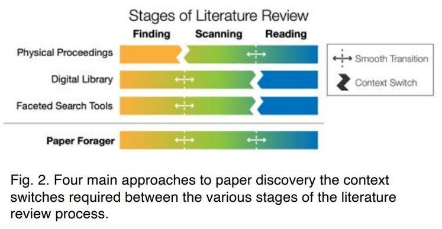
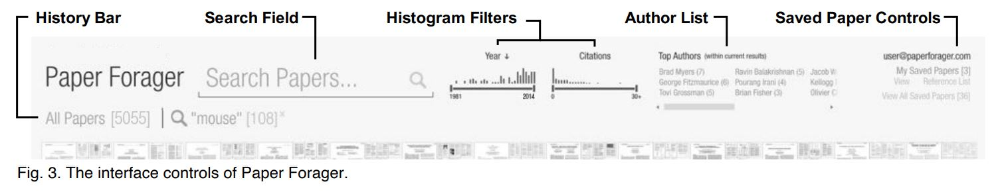
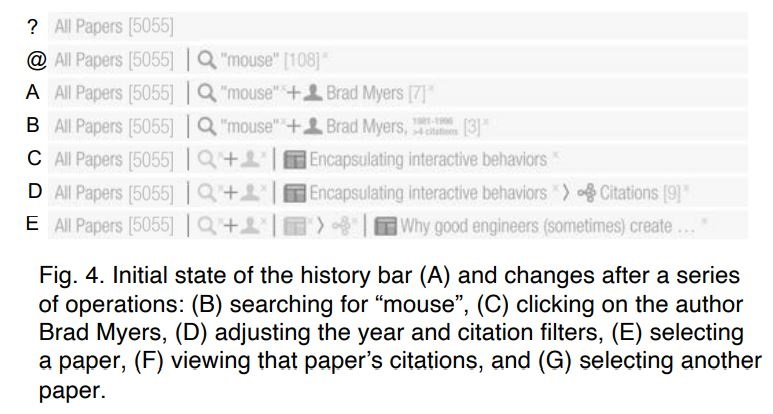
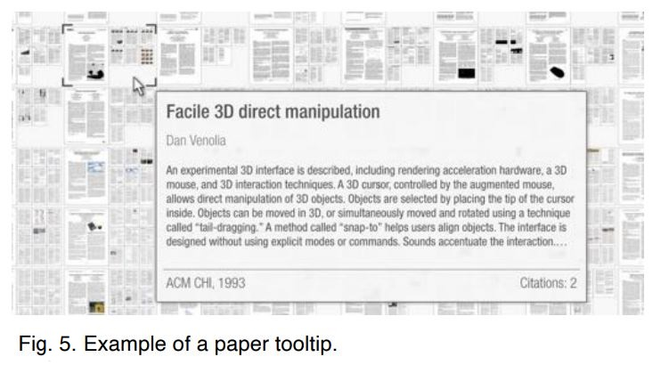
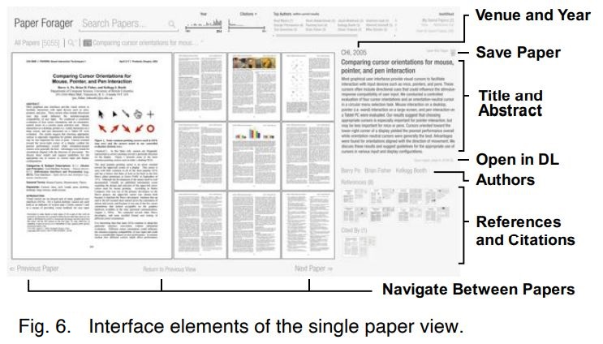
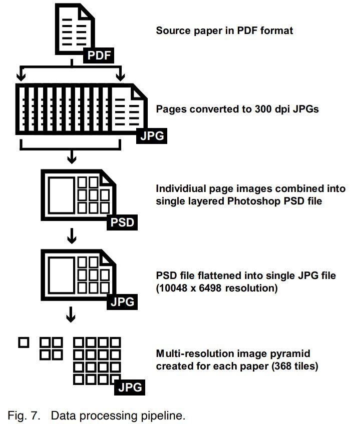
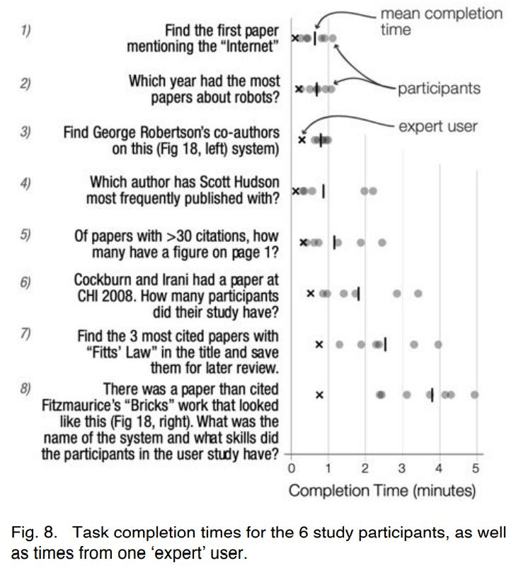
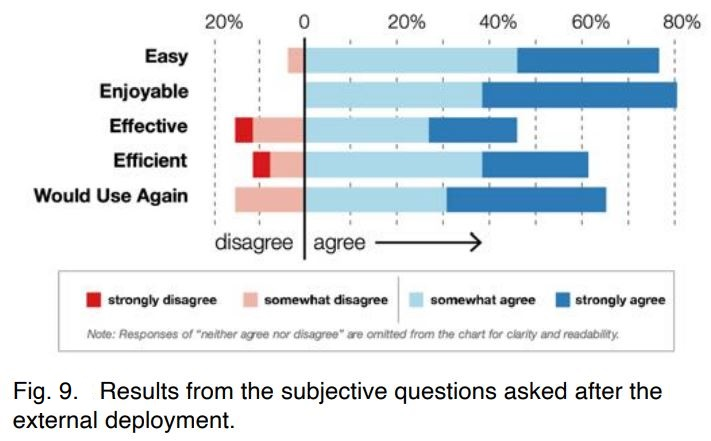

Study of Paper Forager

The process of literature review can be composed of three main stages:
Finding: filtering the collection of all possible papers down to those you might want to read, either by browsing the collection, or explicitly searching.
Scanning: making a decision for each individual paper as to whether it is worthwhile to read based on the available information scent cues.
Reading: looking through the content of the paper for useful information.
In order to maintain flow during the literature review process, it is desirable for the transitions between the stages to be as smooth as possible.
With physical proceedings and digital library, there are not well connected through the whole stage of literature review. This paper designed Paper Forager to combine all of the phases together.
Along the top of the window are the interface controls for refining the displayed collection of papers which includes the search field, histogram filters, author list, history bar, and saved paper controls.
Search field initializes keyword searches of the titles and abstracts of the papers, as well as searches for authors and conference titles. The search system will automatically recognize author and conference names. By default, entering a term in the search field will perform a new query using the entire collection as input, but prefacing a search term with a plus sign (+) creates an additive search filter.
Histogram Filters display the number of papers published in each year and the relative distribution of the number of citations each paper has received. Users can click the Year and Citations headings to set the sorting order of the papers in the main display area.
Author list is a list of the top authors of the papers within the current search results.
history bar is designed for keeping a history of actions during information foraging and provides a way for users to see how they arrived at their current view and the ability to easily backtrack if desired. Each type of search event has its own history token icon. As the list of tokens grows longer, the previous ones are minimized to show only their icon and their full description is displayed in a tooltip.
Saved paper controls provide the access to the collection of the user’s saved papers, as well as all papers saved by the user community.
The main display area offers a collection view, a paper view, and a page view.
The collection view is used to display all papers that match the current query and filters.
In paper view, the composite image of the paper is fit to the main canvas area, with additional metadata including the title, abstract, authors, venue, and year displayed on the right.
In page view, the navigational controls and arrow keys change to support navigation between the pages of the document.
The original PDF versions of the papers go through a multi-stage processing pipeline to convert them into their multi-scale image pyramid format. Combined with preloading technology, the image can be immediately displayed when requested.
Initial user feedback (6 participants) and public deployments (153 users) all provide a very positive feedback after using the system and many users expressed interest in continue using the system after the study deployment is over.
 Matejka, J., Grossman, T., & Fitzmaurice, G. (2021). Paper forager: Supporting the rapid exploration of research document collections. Proceedings - Graphics Interface, 2021-May. https://doi.org/10.20380/GI2021.27